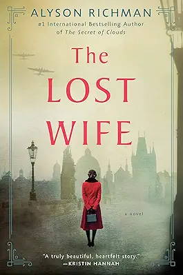

La Vallée
"I think someone is acting like they believe they're God..."
A cry for help in the middle of the night. A valley cut off from the world. An abbey full of secrets. A mysterious forest. A series of gruesome murders. A terrified population seeking justice. A raven that accuses. A community on the brink of chaos. A new investigation for Martin Servaz.

The Lost Wife
"During the last moments of calm in prewar Prague, Lenka, a young art student, and Josef, who is studying medicine, fall in love. With the promise of a better future, they marry—only to have their dreams shattered by the imminent Nazi invasion. Like so many others, they are torn apart by the currents of war.
Now a successful obstetrician in America, Josef has never forgotten the wife he believes died in the war. But in the Nazi ghetto of Terezín, Lenka survived, relying on her skills as an artist and the memories of a husband she would never see again. Then, decades later and thousands of miles away, an unexpected encounter in New York leads to an inescapable glance of recognition, and the realization that providence has given Lenka and Josef one more chance.